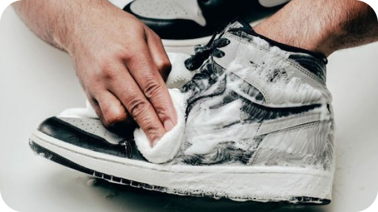

Любители спорта и активного образа жизни знают, как важно не только правильно выбрать спортивную обувь, но и уметь за ней ухаживать. Правильный уход поможет сохранить внешний вид и функциональные характеристики кроссовок на долгое время. Вот несколько советов, которые помогут вам в этом.
1. Правильная чистка
Чистите кроссовки регулярно, не допуская сильного загрязнения. Используйте мягкую щетку или влажную ткань для удаления грязи с поверхности. Для более устойчивых пятен можно использовать специальные средства для чистки спортивной обуви или мягкий мыльный раствор. Важно избегать использования агрессивных химических средств, которые могут повредить материал.
